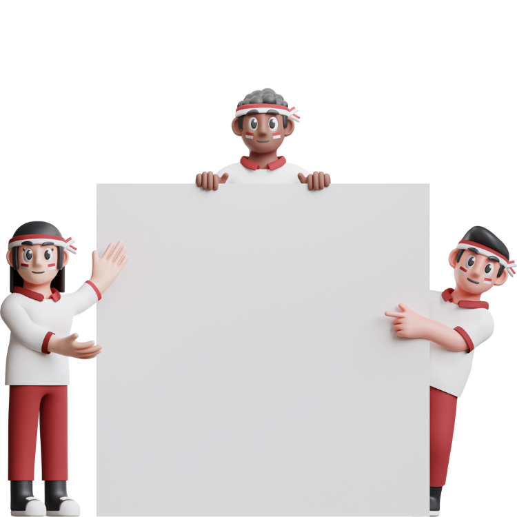

瞭解更多
我們是誰？
你好！我們是下一屆班聯會正副會長的候選人，你可以點擊下方的按鈕就會看到我們更詳細的資訊囉～

我們的政見
我們的政見總共分成4個核心，分別是學權、教育、娛樂活動、環境改善。
點擊按鈕深入了解我們的每個政見～
瞭解更多
你好！我們是下一屆班聯會正副會長的候選人，你可以點擊下方的按鈕就會看到我們更詳細的資訊囉～
我們的政見總共分成4個核心，分別是學權、教育、娛樂活動、環境改善。
點擊按鈕深入了解我們的每個政見～